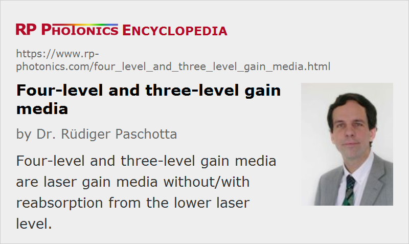

Four-level and Three-level Gain Media
Definition: laser gain media without/with reabsorption from the lower laser level
More general term: gain media
German: Vierniveau- und Dreiniveau-Verstärkungsmedien
Categories: optical materials, lasers
How to cite the article; suggest additional literature
Author: Dr. Rüdiger Paschotta
Optical amplification in the gain medium of a laser or laser amplifier arises from stimulated emission, where the input light induces transitions of laser-active ions from some excited state to a lower state.
Three-Level Systems
In a three-level system, the laser transition ends on the ground state. The unpumped gain medium exhibits strong absorption on the laser transition. A population inversion and consequently net laser gain result only when more than half of the ions (or atoms) are pumped into the upper laser level; the threshold pump power is thus fairly high.
The population inversion can be achieved only by pumping into a higher-lying level, followed by a rapid radiative or non-radiative transfer into the upper laser level, because in this way one avoids stimulated emission caused by the pump wave. (For transitions between only two levels, simultaneous pump absorption and signal amplification can not occur.)
An example of a three-level laser medium is ruby (Cr3+:Al2O3), as used by Maiman for the first laser.
Pure three-level laser gain media are seldom used, while quasi-three-level media (see below) are quite common, particularly in the context of fiber lasers.
Four-Level Systems
A lower threshold pump power can be achieved with a four-level laser medium, where the lower laser level is well above the ground state and is quickly depopulated e.g. by multi-phonon transitions. Ideally, no appreciable population density in the lower laser level can occur even during laser operation. In that way, reabsorption of the laser radiation is avoided (provided that there is no absorption on other transitions). This means that there is no absorption of the gain medium in the unpumped state, and the gain usually rises linearly with the absorbed pump power.
The most popular four-level solid-state gain medium is Nd:YAG. All lasers based on neodymium-doped gain media, except those operated on the ground-state transition around 0.9–0.95 μm, are four-level lasers.
Neodymium ions can also be directly pumped into the upper laser level, e.g. with pump light around 880 nm for Nd:YAG. Even though effectively only three levels are involved, the term three-level system would not be used here.
Quasi-Three-Level Systems
A quasi-three-level laser medium is one with a kind of intermediate situation, where the lower laser level is so close to the ground state that an appreciable population in that level occurs in thermal equilibrium at the operating temperature. As a consequence, the unpumped gain medium causes some reabsorption loss at the laser wavelength, and transparency is reached only for some finite pump intensity. For higher pump intensities, there is gain, as required for laser operation.
Examples of quasi-three-level media are all ytterbium-doped gain media (e.g. Yb:YAG, or Yb:glass as used in optical fibers), neodymium-doped media operated on the ground state transition (e.g. 946 nm for Nd:YAG), thulium-doped crystals and glasses for 2-μm emission, and erbium-doped media for 1.5 or 1.6-μm emission, such as erbium-doped fiber amplifiers.
An important fact is that the spectral shape of the optical gain in a quasi-three-level laser medium depends on the excitation level, because this affects the balance between emission and reabsorption. As a consequence, the laser wavelength obtained may depend on the resonator losses: high losses require a higher gain, and thus a higher excitation level, and consequently a shorter wavelength of maximum gain. (Note that the reabsorption is stronger at shorter wavelengths, thus particularly reducing the short-wavelength net gain for low excitation levels.) Similarly, the wavelength of maximum gain can be reduced by reducing the doping concentration, because this also implies a higher excitation density. On the other hand, this measure may reduce the efficiency of pump absorption. Therefore, there can be a trade-off between short-wavelength operation (with small quantum defect) and efficient pump absorption.
There can actually be a smooth transition from three-level to four-level gain characteristics with increasing laser wavelength. For example, erbium-doped glass (see Figure 2) shows strong three-level behavior around 1535 nm but nearly four-level behavior for long wavelengths of e.g. 1600 nm. Similarly, ytterbium-doped glass exhibits pronounced three-level characteristics for wavelengths below ≈ 1040 nm, and the same holds for Yb:YAG lasers at 1030 nm and for lasers based on many other rare earth crystals. For operation at such wavelengths, a large inversion density is required for overcoming the reabsorption loss. For longer wavelengths, as sometimes used particularly in fiber lasers, there is hardly any reabsorption, and in a long fiber only a very low excitation density may be required to obtain sufficient gain.
Pronounced three-level behavior is inevitable for gain media with a very small quantum defect, because this enforces a small energy spacing between the lower laser level and the ground state, so that thermal population of the lower laser level is significant.
By reducing the temperature of the laser crystal, it is possible to obtain less pronounced three-level characteristics, i.e., a reduced degree of reabsorption on the laser wavelength. This is essentially because the population in higher-lying sublevels of the ground state manifold is reduced. As an example, Yb:YAG has pronounced three-level characteristics at 1030 nm when operated at room temperature, while essentially four-level characteristics are obtained for cryogenic operation at 77 K (the temperature of liquid nitrogen).
Note that the gain media of semiconductor lasers actually also behave like three-level lasers, exhibiting losses in the unpumped state and a shape of the gain spectrum which depends on the excitation density.
Common Errors
In the literature, a profound misunderstanding of various aspects related to three-level gain media is sometimes encountered:
- It is sometimes not understood that the reabsorption does not constitute a real loss of energy, because it excites ions into the upper level, so that stimulated emission can again occur at a later time. Nevertheless, three-level characteristics tend to decrease the laser efficiency for other reasons: they require higher excitation densities, leading to higher losses through fluorescence, and they usually do not permit the gain medium to be made long enough for complete pump absorption, because reabsorption would dominate in weakly pumped regions.
- Another frequent mistake is to believe that (according to Einstein's original simple model) there are equal transition cross sections for stimulated emission and reabsorption, although this does not hold for effective transition cross sections of transitions between level manifolds with non-degenerate Stark levels, as often occur in solid-state gain media.
- The saturation fluence is often not calculated correctly: it is the photon energy divided by the sum of emission and absorption cross sections.
- It is not true that reabsorption in a three-level gain medium (whether in an unpumped region or not) acts like a saturable absorber, leading to Q-switching effects and the like. For such effects, the cross sections of the absorber would have to be larger than those of the gain medium.
Questions and Comments from Users
Here you can submit questions and comments. As far as they get accepted by the author, they will appear above this paragraph together with the author’s answer. The author will decide on acceptance based on certain criteria. Essentially, the issue must be of sufficiently broad interest.
Please do not enter personal data here; we would otherwise delete it soon. (See also our privacy declaration.) If you wish to receive personal feedback or consultancy from the author, please contact him e.g. via e-mail.
By submitting the information, you give your consent to the potential publication of your inputs on our website according to our rules. (If you later retract your consent, we will delete those inputs.) As your inputs are first reviewed by the author, they may be published with some delay.
Bibliography
| [1] | P. P. Sorokin and M. J. Stevenson, “Stimulated infrared emission from trivalent uranium”, Phys. Rev. Lett. 5 (12), 557 (1960), doi:10.1103/PhysRevLett.5.557 (the first four-level laser) |
| [2] | W. P. Risk, “Modeling of longitudinally pumped solid-state lasers exhibiting reabsorption losses”, J. Opt. Soc. Am. B 5 (7), 1412 (1988), doi:10.1364/JOSAB.5.001412 |
| [3] | J. O. White, “Parameters for quantitative comparison of two-, three-, and four-level laser media, operating wavelengths, and temperatures”, IEEE J. Quantum Electron. 45 (10), 1213 (2009), doi:10.1109/JQE.2009.2020607 |
| [4] | Blog article: What is different for quasi-three-level lasers? |
See also: gain media, ytterbium-doped gain media, rare-earth-doped gain media, laser transitions, solid-state lasers, reciprocity method, effective transition cross sections, cryogenic lasers, The Photonics Spotlight 2006-08-12
and other articles in the categories optical materials, lasers

This encyclopedia is authored by Dr. Rüdiger Paschotta, the founder and executive of RP Photonics Consulting GmbH. How about a tailored training course from this distinguished expert at your location? Contact RP Photonics to find out how his technical consulting services (e.g. product designs, problem solving, independent evaluations, training) and software could become very valuable for your business!
|  |
If you like this page, please share the link with your friends and colleagues, e.g. via social media: 


These sharing buttons are implemented in a privacy-friendly way! |
2020-06-15
Suppose you have a quasi three-level system with the lower laser level being one of the Stark split levels of the ground state. Normally, this state sees thermal population due to the Boltzmann distribution. Now assume the system is inverted and starts lasing. The ions from the upper laser level transition into the the lower laser level. This – in theory – limits the extracted energy to 1/2 of the initial population above transparency, but it depends on the ability of the lower level to thermally equalize faster or slower than the extraction. Suppose you have a Q-switched laser producing 10–30 ns pulses. Does the lower state equalize fast enough (i.e. in <1–10 ns) so the extracted energy is higher than the 1/2 of the initial population?
Answer from the author:
First of all, the energy limitation is usually weaker than by a factor of 2, since due to the Boltzmann distribution at moderate temperatures you need much less than 50% excitation for obtaining positive net gain.
The relaxation within a Stark level manifold is usually fast enough in a Q-switched laser – it occurs on a picosecond timescale.